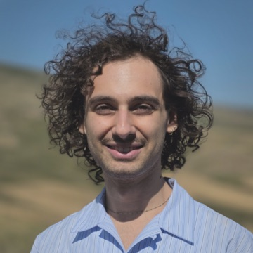

Arman A. Simonyan
Profile
Computational scientist in de novo protein design and pharmacogenomics, with expertise in pipeline engineering, HPC, patient-level clinical multi-omics, structural and drug-response data processing and resource management from Copenhagen University, Rigshospitalet, Harvard Medical School, & Armenian National Research Institutes; skilled in deep learning, Python & C++. Indie movie geek and cave painting fan.
Scientific career
University of Copenhagen
Ph.D. in Pharmaceutical Sciences (Gloriam Group, ILF)
ThesisAI-powered drug discovery for G-protein coupled receptors
Key competencesProtein/peptide engineering (BoltzGen, RFdiffusion3, AF-backpropagation, ProteinMPNN, ESM-IF, Rosetta Suite), generative and predictive modeling, co-folding (AF3, Boltz-2, ESM), pLMs, homology modeling, docking, molecular dynamics, database generation (GPCRdb), HPC & resource management, grant acquisition & management (DDSA).
Rigshospitalet
Bioinformatics research assistant (Center for Genomic Medicine)
Single-cell protocol benchmark; identification of driver mutations in oral cavity squamous cell carcinoma; characterisation of nonsense-mediated decay in cancers.
Key competencesMulti-omics analysis (bulk/single-cell/spatial RNA-seq, WGS), genome assembly, variant calling, pharmacogenomic & clinical data management, LIMS, database mining, workflow orchestration & automation (Snakemake, Conda, SLURM), containerisation.
Harvard Medical School
Neuroinformatics researcher-in-residence (Dystonia Group, MEEI/HMS)
ML for identification of genetic variants with neural correlates in spasmodic dysphonia.
Key competencesEEG & fMRI brain imaging data analysis, Bayesian signal processing, variant calling, neurogenomics, pipeline engineering & deployment, HPC.
Institute of Molecular Biology, Armenia
Research Assistant (Bioinformatics group; Human Genomics lab)
Transcriptome-based drug repositioning; telomere lengthening pathway analysis in disease progression; characterisation of genetic markers for schizophrenia in Armenian population.
Key competencesBiological pathway analysis (Cytoscape, PSF, TMM), sequence analysis (WGS, SNP, RNA-seq), drug repositioning, database mining, pipeline engineering, ML, DNA extraction & purification, PCR, gel electrophoresis.
Orbeli Institute of Physiology, Armenia
Researcher-in-residence (Tissue Engineering Lab)
Bioreactor engineering, tissue harvesting, fluorescent confocal microscopy, mass spectrometry.
Education
M.Sc. in Bioinformatics
University of Copenhagen
ThesisAutomated pharmacogenomic decision support for inclusion in Phase 1 clinical trials
B.Sc. in Computer Science & Math Modeling
American University of Armenia
ThesisTranscriptome & survival patterns in BRCA1/2-positive breast & ovarian cancers
Skills
R&DDe novo protein and peptide binder design; G protein-coupled receptor (GPCR) modeling; structural bioinformatics (AlphaFold2/3, RFdiffusion2/3, Boltz-2, BoltzGen, PyMOL, UCSF ChimeraX); molecular dynamics simulations; high-throughput affinity scoring; hit-to-lead optimization; thermodynamic evaluation; high-throughput sequencing analysis; GWAS (PLINK, REGENIE, SAIGE); QTL analysis (FastQTL, QTLtools).
Data scienceDeep learning (transformers, GNNs, VAEs, SOMs); Conda and Python (PyTorch, JAX, Biopython, Gemmi, RDKit), R, Bash, Java, C++; Git; containerisation (Docker); workflow orchestration (Nextflow, Snakemake); HPC & cloud computing (SLURM, AWS).
Scientific administrationScientific writing and peer review; prior art searching and patent landscape analysis; scientific poster and vector graphic design; regulatory documentation; research project management; multi-stakeholder communication; complex problem solving from first principles; grant and proposal synthesis; mentorship.
Spoken languagesEnglish (proficient), Danish (conversational, B1), Armenian (native), Russian (proficient).
Grants and awards
Publications
h-index 6 · 243 citations · Google Scholar
Patent applications
Antagonists for the ghrelin receptor
European patent application, filed November 2026 (pending)
Partial agonists for the ghrelin receptor
European patent application, filed November 2026 (pending)
Inverse agonists for the ghrelin receptor
European patent application, filed November 2026 (pending)
Journal articles
GPCRdb in 2027: AI-driven structure annotation, non-physiological ligand–GPCR models and expanding the ligand space
Nucleic Acids Research, in press (accepted November 2026)
Discovery of ghrelin receptor ligands leveraging AlphaFold, Rosetta and human expert designs
Under review
A protocol for low-input RNA-sequencing of patients with febrile neutropenia captures relevant immunological information
International Journal of Molecular Sciences · doi:10.3390/ijms241210251
Benchmarking full-length transcript single-cell mRNA sequencing protocols
BMC Genomics · doi:10.1186/s12864-022-09014-5
A comparison of tools for copy-number variation detection in germline whole exome and whole genome sequencing data
Cancers · doi:10.3390/cancers13246283
Telomere maintenance pathway activity analysis enables tissue- and gene-level inferences
Frontiers in Genetics · doi:10.3389/fgene.2021.662464
Transcriptome patterns of BRCA1- and BRCA2-mutated breast and ovarian cancers
International Journal of Molecular Sciences · doi:10.3390/ijms22031266
Reliability assessment of biology tests with the Kuder–Richardson method
Bnaget
Tissue engineering liver: an emerging therapy for hepatic diseases
The New Armenian Medical Journal
Transcriptome-guided drug repositioning
Pharmaceutics · doi:10.3390/pharmaceutics11120677
Analysis of transcriptome changes in response to heavy metals using self-organizing maps
Katchar Scientific Periodical
Book chapter
Bioreactors
In: Sarvazyan N (ed.), Tissue Engineering, Learning Materials in Biosciences. Springer, Cham · doi:10.1007/978-3-030-39698-5_11
Conference proceedings
Quantitative trait locus analysis in spasmodic dysphonia
In: Darbinyan A (ed.), Proceedings of the XIV Annual International Conference of Russian-Armenian University. Russian-Armenian University, Yerevan
Selected conference presentations
Human-, Rosetta- versus AlphaFold-based design of ghrelin receptor ligands
2nd GPCR Forum (virtual) · oral
New ML-driven approaches for peptide hormone and drug discovery
76th Mosbacher Kolloquium, AI-driven (r)evolution in structural biology & protein design, Germany · oral
Genome-wide association study in laryngeal dystonia
XIV Annual International Conference of Russian-Armenian University, Armenia · oral
Four international student conference talks and over 20 poster presentations
Teaching and outreach
- SLKKIL112U Structure-based Drug Research (UCPH, B.Sc.)
- SFAB20004U Cellular and Molecular Biology (UCPH, B.Sc.)
- Supervision of 3 M.Sc. projects
- Organisation of the International Biology Olympiad
- Content development at Khan Academy (Armenian)
Media


Hungry Lemon Panda
Computer science explainers in Armenian. Full playlist